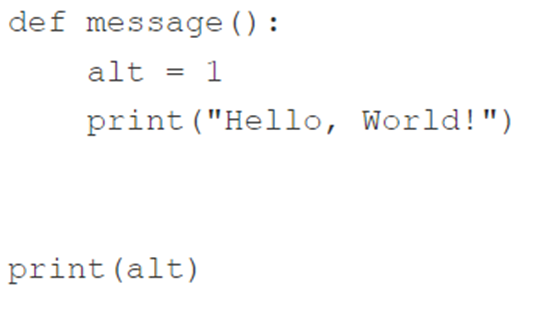

Code
def hi(name):
print("Hi,", name)
hi("Greg")Hi, GregМета: навчитися писати функції та користуватися ними
Приклад функції з одним параметром і без ключового слова return:
def hi(name):
print("Hi,", name)
hi("Greg")Hi, GregПриклад функції з ключовим словом return:
def strange_function(n):
if(n % 2 == 0):
return True
print(strange_function(2))
print(strange_function(1))
True
NoneНаписати і протестувати фун кцію, яка приймає один аргумент (рік) і повертає True, якщо рік є високосним, або False інакше.
Основу функції вже закладено у коді в редакторі.
Примітка: для вас підготувлено короткий тестуючий код, який можна використовувати для перевірки своєї функції.
У коді використовуються два списки - один із тестовими даними, інший - з очікуваними результатами. Код повідомить Вам, якщо якісь із Ваших результатів неправильні.
# def is_year_leap(year):
# #
# # Write your code here.
# #
# test_data = [1900, 2000, 2016, 1987]
# test_results = [False, True, True, False]
# for i in range(len(test_data)):
# yr = test_data[i]
# print(yr,"->",end="")
# result = is_year_leap(yr)
# if result == test_results[i]:
# print("OK")
# else:
# print("Failed")Написати та протестувати функцію, яка приймає два аргументи (рік і місяць) і повертає кількість днів для даної пари рік-місяць (у той час, як тільки лютий чутливий до значення year, Ваша функція має бути універсальною).
Початок функції готовий. Тепер переконайте функцію повернути None, якщо її аргументи не мають сенсу.
Звичайно, Ви можете (і повинні) використовувати раніше написану та протестовану функцію (див. попередні лаб. роб.). Це може бути дуже корисним. Ми рекомендуємо використовувати список із зазначенням довжини місяців. Ви можете створити його всередині функції – цей трюк значно скоротить код.
Ми підготували тестуючий код. Розвійте його, щоб увімкнути більше тестових випадків.
# def is_year_leap(year):
# #
# # Your code from LAB 4.3.6.
# #
# def days_in_month(year, month):
# #
# # Write your new code here.
# #
# test_years = [1900, 2000, 2016, 1987]
# test_months = [2, 2, 1, 11]
# test_results = [28, 29, 31, 30]
# for i in range(len(test_years)):
# yr = test_years[i]
# mo = test_months[i]
# print(yr, mo, "->", end="")
# result = days_in_month(yr, mo)
# if result == test_results[i]:
# print("OK")
# else:
# print("Failed")Написати та протестувати функцію, яка приймає три аргументи (рік, місяць та день місяця) та повертає відповідний день року або None, якщо якийсь із аргументів невірний.
Використовуйте раніше написані та протестовані функції. Додайте до коду свої власні тестові випадки.
# def is_year_leap(year):
# #
# # Your code from LAB 4.3.1.6.
# #
# def days_in_month(year, month):
# #
# # Your code from LAB 4.3.1.7.
# #
# def day_of_year(year, month, day):
# #
# # Write your new code here.
# #
# print(day_of_year(2000, 12, 31))Натуральне число є простим, якщо воно більше 1 і не має дільників, крім 1 і самого себе.
Важко? Зовсім ні. Наприклад, 8 не є простим числом, оскільки Ви можете розділити його на 2 та 4 (ми не можемо використовувати дільники, рівні 1 та 8, оскільки визначення забороняє це).
З іншого боку, 7 - просте число, оскільки ми можемо знайти йому підходящих дільників.
Ваше завдання - написати функцію, що перевіряє, чи є число простим чи ні.
Функція:
is_prime;True, якщо аргумент є простим числом, і False інакше.Підказка: спробуйте розділити аргумент на всі наступні значення (починаючи з 2) і перевірте залишок - якщо він дорівнює нулю, Ваше число не може бути простим; добре подумайте, коли вам слід зупинити процес.
Якщо вам потрібно знайти квадратний корінь із будь-якого значення, Ви можете використовувати оператор **. Пам’ятайте: квадратний корінь x дорівнює \(x^{0,5}\).
Доповніть код у редакторі.
# def is_prime(num):
# #
# # Write your code here.
# #
# for i in range(1, 20):
# if is_prime(i + 1):
# print(i + 1, end=" ")
# print()2 3 5 7 11 13 17 19
Витрата палива автомобіля можна висловити по-різному. Наприклад, у Європі він відображається як кількість витраченого палива на 100 кілометрів шляху.
У США він відображається як кількість миль, пройдених автомобілем під час витрачання одного галону палива.
Ваше завдання - написати дві функції, що конвертують л/100км в миль на галон, і навпаки.
Функції:
liters_100km_to_miles_gallon та miles_gallon_to_liters_100km відповідно;Доповніть код у редакторі.
Запустіть свій код і перевірте, чи Ваш результат збігається з нашим.
Ось деяка інформація, яка може допомогти Вам:
# def liters_100km_to_miles_gallon(liters):
# #
# # Write your code here.
# #
# def miles_gallon_to_liters_100km(miles):
# #
# # Write your code here.
# #
# print(liters_100km_to_miles_gallon(3.9))
# print(liters_100km_to_miles_gallon(7.5))
# print(liters_100km_to_miles_gallon(10.))
# print(miles_gallon_to_liters_100km(60.3))
# print(miles_gallon_to_liters_100km(31.4))
# print(miles_gallon_to_liters_100km(23.5))60.31143162393162
31.36194444444444
23.52145833333333
3.9007393587617467
7.490910297239916
10.009131205673757
Давайте напишемо функцію оцінки індексу маси тіла (ІМТ, BMI). \[BMI = \frac{m}{h^2}\] тут \(m\) – маса у кг, \(h\) – зріст у м.
def bmi(weight, height):
return weight / height ** 2
print(bmi(52.5, 1.65))19.283746556473833noneФункція у попередньому прикладі виправдовує наші очікування, але вона дещо проста – вона припускає, що значення обох параметрів завжди мають сенс. Варто перевірити, чи заслуговують вони на довіру.
Давайте перевіримо їх обидва і повернемо None, якщо якесь з них виглядає підозріло.
def bmi(weight, height):
if height < 1.0 or height > 2.5 or \
weight < 20 or weight > 200:
return None
return weight / height ** 2
print(bmi(352.5, 1.65))NoneНаписати функцію, яка перевіряє, чи три сторони заданої довжини побудувати трикутник. Вона має повернути True, якщо сторони можуть утворити трикутник, і False в іншому випадку. У цьому випадку is_a_triangle(a, b, c) – гарна назва для такої функції.
# Тут має бути фаш кодНаписати функцію is_a_right_triangle(a, b, c), яка перевіряє, чи є трикутник зі сторонами a, b, c прямокутним. При цьому потрібно використати функцію is_a_triangle(a, b, c) з завдання 6.
# Тут має бути Ваш кодВиконати завдання 1-7 наведені вище у цьому зошиті.
Створити файл lab_6_StudentLastName.py з написаним кодом.
Закомітити файл у локальний репозиторій.
Відправити (“запушити”) поточну версію Git-проєкта у віддалений репозиторій на GitHub.
Звіт має складатися з файлу (за основу взяти цей Python-зошит) lab_6_StudentLastName.ipynb. (Можливі якісь додакові файли)
Який вивод наступного фрагмента?

Який вивод наступного фрагмента?

Який вивод наступного фрагмента?

Який вивод наступного фрагмента?